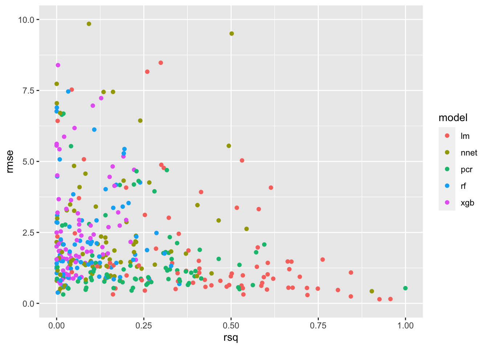
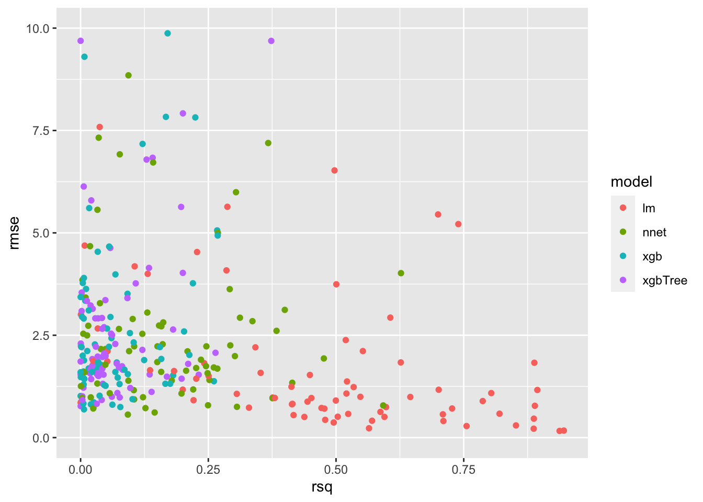

Section - 8 Evaluate Model Performance
Now we get to see the results of our hard work! There are some additional data preparation steps we need to take before we can visualize the results in aggregate; if you are just looking for the charts showing the results they are shown later on in the “Visualize Results” section below.
8.1 Summarizing models
Because we know what really happened for the target variable in the test data we used in the previous step, we can get a good idea of how good the model performed on a dataset it has never seen before. We do this to avoid overfitting, which is the idea that the model may work really well on the training data we provided, but not on the new data that we want to predictions on. If the performance on the test set is good, that is a good sign. If the data is split into several subsets and each subset has consistent results for the training and test datasets, that is an even better sign the model may perform as expected.
The first row of the data is for the EOS cryptocurrency for the split number 1. For this row of data (and all others), we made predictions for the test_data using a linear regression model and saved the results in the lm_test_predictions column. The models were trained on the train_data and had not yet seen the results from the test_data, so how accurate was the model in its predictions on this data?
8.1.1 MAE
Each individual prediction can be compared to the observation of what actually happened, and for each prediction we can calculate the error between the two. We can then take all of the values for the error of the prediction relative to the actual observations, and summarize the performance as a Mean Absolute Error (MAE) of those values, which gives us a single value to use as an indicator of the accuracy of the model. The higher the MAE score, the higher the error, meaning the model performs worse when the value is larger.
8.1.2 RMSE
A common metric to evaluate the performance of a model is the Root Mean Square Error, which is similar to the MAE but squares and then takes the square root of the values. An interesting implication of this, is that the RMSE will always be larger or equal to the MAE, where a large degree of error on a single observation would get penalized more by the RMSE. The higher the RMSE value, the worse the performance of the model, and can range from 0 to infinity, meaning there is no defined limit on the amount of error you could have (unlike the next metric).
8.1.3 R Squared
The \(R^2\), also known as the coefficient of determination, is a measure that describes the strength in the correlation between the predictions made and the actual results. A value of 1.0 would mean that the predictions made were exactly identical to the actual results. A perfect score is usually concerning because even a great model shouldn’t be exactly 100% accurate and usually indicates a mistake was made that gave away the results to the model and would not perform nearly as good when put into practice in the real world, but in the case of the \(R^2\) the higher the score (from 0 to 1) the better.
8.1.4 Get Metrics
We can return the RMSE and \(R^2\) metrics for the EOS cryptocurrency and the split number 1 by using the postResample() function from the caret package:
postResample(pred = cryptodata_nested$lm_test_predictions[[1]],
obs = cryptodata_nested$test_data[[1]]$target_price_24h)## RMSE Rsquared MAE
## NA 0.00003346752 NAWe can extract the first element to return the RMSE metric, and the second element for the R Squared (R^2) metric. We are using [[1]] to extract the first element of the lm_test_predictions and test_data and compare the predictions to the actual value of the target_price24h column.
This model used the earliest subset of the data available for the cryptocurrency. How does the same model used to predict this older subset of the data perform when applied to the most recent subset of the data from the holdout?
We can get the same summary of results comparing the lm_holdout_predictions to what actually happened to the target_price_24h column of the actual holdout_data:
postResample(pred = cryptodata_nested$lm_holdout_predictions[[1]],
obs = cryptodata_nested$holdout_data[[1]]$target_price_24h)## RMSE Rsquared MAE
## NA 0.02421414 NAThe result above may show a value of NA for the RMSE metric. We will explain and resolve the issue later on.
8.1.5 Comparing Metrics
How do these two results compare and why is this comparison important? The RMSE is helpful in understanding the magnitude of the errors of the predictions, while the \(R^2\) helps us determine how easily we can predict future values.
These are indicators that should be taken with a grain of salt individually, but comparing the results across many different models for the same cryptocurrency can help us determine which models work best for the problem, and then comparing those results across many cryptocurrencies can help us understand which cryptocurrencies we can predict with the most accuracy.
Before we can draw these comparisons however, we will need to “standardize” the values to create a fair comparison across all dataasets.
8.2 Data Prep - Adjust Prices
Because cryptocurrencies can vary dramatically in their prices with some trading in the tens of thousands of dollars and others trading for less than a cent, we need to make sure to standardize the RMSE columns to provide a fair comparison for the metric.
Therefore, before using the postResample() function, let’s convert both the predictions and the target to be the % change in price over the 24 hour period, rather than the change in price ($).
8.2.1 Add Last Price
In order to convert the first prediction made to be a percentage, we need to know the previous price.
Function to add last_price_train column and append it to the predictions made so we can calculate the % change of the first element, before later removing the value not associated with the predictions:
last_train_price <- function(train_data, predictions){
c(tail(train_data$price_usd,1), predictions)
}Now overwrite the old predictions:
cryptodata_nested <- mutate(cryptodata_nested,
lm_test_predictions = ifelse(split < 5,
map2(train_data, lm_test_predictions, last_train_price),
NA))8.2.1.1 Holdout
Do the same for the holdout. For all of holdout need to take last price point of 5th training split.
cryptodata_nested_holdout <- mutate(filter(cryptodata_nested, split == 5),
lm_holdout_predictions = map2(train_data, lm_holdout_predictions, last_train_price))Join the holdout data to all rows based on the cryptocurrency symbol alone:
cryptodata_nested <- left_join(cryptodata_nested,
dplyr::select(cryptodata_nested_holdout, symbol, lm_holdout_predictions),
by='symbol')
# Remove unwanted columns
cryptodata_nested <- dplyr::select(cryptodata_nested, -lm_holdout_predictions.x, -split.y)
# Rename the columns kept
cryptodata_nested <- rename(cryptodata_nested,
lm_holdout_predictions = 'lm_holdout_predictions.y',
split = 'split.x')
# Reset the correct grouping structure
cryptodata_nested <- group_by(cryptodata_nested, symbol, split)8.2.2 Convert to Percentage Change
standardize_perc_change <- function(predictions){
results <- (diff(c(lag(predictions, 1), predictions)) / lag(predictions, 1))*100
# Exclude the first element, next element will be % change of first prediction
tail(head(results, length(predictions)), length(predictions)-1)
}Overwrite the old predictions with the new predictions adjusted as a percentage now:
8.2.3 Actuals
Now do the same thing to the actual prices. Let’s make a new column called actuals containing the real price values (rather than the predicted ones):
actuals_create <- function(train_data, test_data){
c(tail(train_data$price_usd,1), as.numeric(unlist(dplyr::select(test_data, price_usd))))
}Use the new function to create the new column actuals:
cryptodata_nested <- mutate(cryptodata_nested,
actuals_test = ifelse(split < 5,
map2(train_data, test_data, actuals_create),
NA))8.2.3.1 Holdout
Again, for the holdout we need the price from the training data of the 5th split
cryptodata_nested_holdout <- mutate(filter(cryptodata_nested, split == 5),
actuals_holdout = map2(train_data, holdout_data, actuals_create))Join the holdout data to all rows based on the cryptocurrency symbol alone:
cryptodata_nested <- left_join(cryptodata_nested,
dplyr::select(cryptodata_nested_holdout, symbol, actuals_holdout),
by='symbol')
# Remove unwanted columns
cryptodata_nested <- dplyr::select(cryptodata_nested, -split.y)
# Rename the columns kept
cryptodata_nested <- rename(cryptodata_nested, split = 'split.x')
# Reset the correct grouping structure
cryptodata_nested <- group_by(cryptodata_nested, symbol, split)8.2.4 Actuals as % Change
Now we can convert the new actuals to express the price_usd as a % change relative to the previous value using adapting the function from earlier:
8.3 Review Summary Statistics
Now that we standardized the price to show the percentage change relative to the previous period instead of the price in dollars, we can actually compare the summary statistics across all cryptocurrencies and have it be a fair comparison.
Let’s get the same statistic as we did at the beginning of this section, but this time on the standardized values:
hydroGOF::rmse(cryptodata_nested$lm_test_predictions[[1]],
cryptodata_nested$actuals_test[[1]],
na.rm=T)## [1] 1.1664378.3.1 Calculate R^2
Now we can do the same for the R Squared metric:
evaluate_preds_rsq <- function(predictions, actuals){
postResample(pred = predictions, obs = actuals)[[2]]
}cryptodata_nested <- mutate(cryptodata_nested,
lm_rsq_test = unlist(ifelse(split < 5,
map2(lm_test_predictions, actuals_test, evaluate_preds_rsq),
NA)),
lm_rsq_holdout = unlist(map2(lm_holdout_predictions, actuals_holdout, evaluate_preds_rsq)))Look at the results:
## # A tibble: 200 x 4
## # Groups: symbol, split [200]
## symbol split lm_rsq_test lm_rsq_holdout
## <chr> <dbl> <dbl> <dbl>
## 1 EOS 1 0.242 0.935
## 2 EDG 1 0.299 0.685
## 3 BTG 1 0.410 0.736
## 4 VET 1 0.814 0.900
## 5 IHF 1 0.0452 0.0523
## 6 DGB 1 0.460 0.506
## 7 LTC 1 0.169 0.883
## 8 NEXO 1 0.222 0.708
## 9 XMR 1 0.780 0.311
## 10 SRN 1 0.00312 0.0423
## # … with 190 more rows8.3.2 Calculate RMSE
Now make a function to get the RMSE metric for all models:
evaluate_preds_rmse <- function(predictions, actuals){
hydroGOF::rmse(predictions, actuals, na.rm=T)
}Now we can use map2() to use it to get the RMSE metric for both the test data and the holdout:
cryptodata_nested <- mutate(cryptodata_nested,
lm_rmse_test = unlist(ifelse(split < 5,
map2(lm_test_predictions, actuals_test, evaluate_preds_rmse),
NA)),
lm_rmse_holdout = unlist(map2(lm_holdout_predictions, actuals_holdout, evaluate_preds_rmse)))Look at the results. Wrapping them in print(n=500) overwrites the behavior to only give a preview of the data so we can view the full results (up to 500 observations).
print(dplyr::select(cryptodata_nested, lm_rmse_test, lm_rmse_holdout, lm_rsq_test, lm_rsq_holdout), n=500)## # A tibble: 200 x 6
## # Groups: symbol, split [200]
## symbol split lm_rmse_test lm_rmse_holdout lm_rsq_test lm_rsq_holdout
## <chr> <dbl> <dbl> <dbl> <dbl> <dbl>
## 1 EOS 1 1.17 0.143 0.242 0.935
## 2 EDG 1 2.46 9.99 0.299 0.685
## 3 BTG 1 1.53 0.344 0.410 0.736
## 4 VET 1 1.29 3.41 0.814 0.900
## 5 IHF 1 1.43 2.47 0.0452 0.0523
## 6 DGB 1 1.03 0.813 0.460 0.506
## 7 LTC 1 0.718 0.488 0.169 0.883
## 8 NEXO 1 2.28 1.45 0.222 0.708
## 9 XMR 1 0.451 0.438 0.780 0.311
## 10 SRN 1 3.20 7.70 0.00312 0.0423
## 11 XNS 1 1.19 6.69 0.620 0.0215
## 12 REP 1 2.50 1.30 0.513 0.247
## 13 AYA 1 5.03 4.87 0.0178 0.660
## 14 BAT 1 1.05 0.439 0.403 0.717
## 15 BTC 1 0.404 0.165 0.312 0.943
## 16 DCR 1 0.721 1.10 0.566 0.818
## 17 STORJ 1 11.0 0.980 0.765 0.844
## 18 ENJ 1 1.10 2.14 0.555 0.479
## 19 XEM 1 1.49 0.564 0.574 0.722
## 20 HT 1 0.711 0.256 0.677 0.839
## 21 BRD 1 0.409 0.930 0.386 0.615
## 22 IHF 2 1.29 2.47 0.157 0.0523
## 23 REP 2 0.790 1.30 0.699 0.247
## 24 ZEC 1 1.01 1.01 0.0621 0.114
## 25 AYA 2 3.62 4.87 0.406 0.660
## 26 VET 2 0.979 3.41 0.286 0.900
## 27 BTG 2 0.240 0.344 0.788 0.736
## 28 XEM 2 1.11 0.564 0.614 0.722
## 29 HT 2 0.369 0.256 0.785 0.839
## 30 EOS 2 0.357 0.143 0.838 0.935
## 31 ENJ 2 0.598 2.14 0.830 0.479
## 32 NEXO 2 0.297 1.45 0.851 0.708
## 33 EDG 2 27.6 9.99 0.339 0.685
## 34 DGB 2 1.23 0.813 0.658 0.506
## 35 LTC 2 0.333 0.488 0.812 0.883
## 36 XMR 2 0.587 0.438 0.563 0.311
## 37 SRN 2 0.813 7.70 0.750 0.0423
## 38 BTC 2 0.285 0.165 0.859 0.943
## 39 BAT 2 0.520 0.439 0.635 0.717
## 40 DCR 2 0.424 1.10 0.741 0.818
## 41 XNS 2 1.04 6.69 0.354 0.0215
## 42 STORJ 2 0.882 0.980 0.0216 0.844
## 43 BRD 2 1.94 0.930 0.874 0.615
## 44 IHF 3 1.10 2.47 0.791 0.0523
## 45 CBC 1 3.68 3.74 0.642 0.0642
## 46 ETH 1 0.618 0.301 0.00400 0.703
## 47 BNT 1 1.03 0.684 0.635 0.482
## 48 MANA 1 0.889 1.59 0.0143 0.125
## 49 ZRX 1 1.33 0.571 0.675 0.513
## 50 TRX 1 1.03 0.313 0.752 0.177
## 51 BSV 1 0.557 0.499 0.122 0.339
## 52 ETP 1 2.43 1.33 0.414 0.583
## 53 CRO 1 1.28 0.683 0.539 0.620
## 54 VET 3 0.816 3.41 0.652 0.900
## 55 BTG 3 0.514 0.344 0.267 0.736
## 56 XEM 3 1.33 0.564 0.966 0.722
## 57 HT 3 0.237 0.256 0.861 0.839
## 58 SRN 3 5.54 7.70 0.242 0.0423
## 59 EOS 3 0.356 0.143 0.334 0.935
## 60 ENJ 3 3.56 2.14 0.00635 0.479
## 61 STORJ 3 0.782 0.980 0.688 0.844
## 62 XMR 3 0.609 0.438 0.678 0.311
## 63 NEXO 3 1.59 1.45 0.367 0.708
## 64 LTC 3 0.485 0.488 0.501 0.883
## 65 EDG 3 13.4 9.99 0.122 0.685
## 66 DGB 3 0.908 0.813 0.238 0.506
## 67 DCR 3 0.425 1.10 0.578 0.818
## 68 BTC 3 0.290 0.165 0.150 0.943
## 69 BAT 3 0.977 0.439 0.0614 0.717
## 70 ZEC 2 NaN 1.01 NA 0.114
## 71 CRO 2 2.48 0.683 1 0.620
## 72 ETH 2 0.563 0.301 0.998 0.703
## 73 BNT 2 2.50 0.684 0.0316 0.482
## 74 TRX 2 1.39 0.313 0.349 0.177
## 75 BSV 2 1.03 0.499 0.139 0.339
## 76 MANA 2 1.20 1.59 0.305 0.125
## 77 CBC 2 7.21 3.74 0.0414 0.0642
## 78 ZRX 2 1.00 0.571 0.139 0.513
## 79 ETP 2 1.02 1.33 0.000161 0.583
## 80 ADA 1 1.16 0.562 0.199 0.0450
## 81 ARDR 1 1.57 1.12 0.000682 0.417
## 82 SOLO 1 1.76 2.40 0.000104 0.00000437
## 83 WAXP 1 2.46 1.33 0.0325 0.170
## 84 ZAP 1 11.2 5.29 0.0103 0.0854
## 85 IPX 1 6.01 4.27 0.0405 0.203
## 86 KNC 1 0.824 1.53 0.123 0.367
## 87 KMD 1 0.955 0.922 0.0335 0.507
## 88 AVA 1 1.10 2.13 0.00465 0.282
## 89 REP 3 0.690 1.30 0.296 0.247
## 90 AYA 3 2.81 4.87 0.0398 0.660
## 91 BRD 3 8.94 0.930 0.938 0.615
## 92 XNS 3 3.63 6.69 0.491 0.0215
## 93 VET 4 0.916 3.41 0.984 0.900
## 94 ZAP 2 1.91 5.29 0.208 0.0854
## 95 TRX 3 0.235 0.313 0.730 0.177
## 96 IPX 2 2.54 4.27 0.140 0.203
## 97 SRN 4 2.92 7.70 0.0170 0.0423
## 98 AVA 2 1.43 2.13 0.171 0.282
## 99 KNC 2 0.555 1.53 0.884 0.367
## 100 MANA 3 0.727 1.59 0.0237 0.125
## 101 ADA 2 0.406 0.562 0.826 0.0450
## 102 ARDR 2 1.39 1.12 0.780 0.417
## 103 SOLO 2 1.13 2.40 0.591 0.00000437
## 104 WAXP 2 0.818 1.33 0.00343 0.170
## 105 BTG 4 2.31 0.344 0.0201 0.736
## 106 ETH 3 2.22 0.301 1 0.703
## 107 BNT 3 8.38 0.684 1 0.482
## 108 KMD 2 0.915 0.922 0.498 0.507
## 109 CRO 3 2.87 0.683 0.574 0.620
## 110 EOS 4 0.436 0.143 0.0489 0.935
## 111 CBC 3 2.98 3.74 0.828 0.0642
## 112 ZRX 3 0.646 0.571 0.626 0.513
## 113 ETP 3 1.93 1.33 0.476 0.583
## 114 BSV 3 0.495 0.499 0.171 0.339
## 115 HT 4 0.266 0.256 0.659 0.839
## 116 ENJ 4 1.33 2.14 0.000344 0.479
## 117 XMR 4 0.620 0.438 0.664 0.311
## 118 LTC 4 1.10 0.488 0.202 0.883
## 119 XEM 4 0.767 0.564 0.852 0.722
## 120 EDG 4 8.88 9.99 0.654 0.685
## 121 BTC 4 0.279 0.165 0.821 0.943
## 122 BAT 4 0.571 0.439 0.303 0.717
## 123 DGB 4 0.640 0.813 0.642 0.506
## 124 NEXO 4 0.946 1.45 0.487 0.708
## 125 DCR 4 0.637 1.10 0.822 0.818
## 126 IHF 4 1.85 2.47 NA 0.0523
## 127 STORJ 4 2.37 0.980 0.0138 0.844
## 128 REP 4 0.494 1.30 0.274 0.247
## 129 AYA 4 4.04 4.87 0.558 0.660
## 130 ZAP 3 1.78 5.29 0.747 0.0854
## 131 IPX 3 0.414 4.27 0.514 0.203
## 132 AVA 3 2.26 2.13 0.635 0.282
## 133 KNC 3 0.645 1.53 0.171 0.367
## 134 ADA 3 0.643 0.562 0.263 0.0450
## 135 ARDR 3 0.819 1.12 0.544 0.417
## 136 SOLO 3 0.818 2.40 0.509 0.00000437
## 137 WAXP 3 0.782 1.33 0.0761 0.170
## 138 KMD 3 1.05 0.922 0.683 0.507
## 139 BRD 4 23.3 0.930 0.0115 0.615
## 140 XNS 4 7.09 6.69 0.645 0.0215
## 141 ZEC 3 0.833 1.01 0.0116 0.114
## 142 TRX 4 0.539 0.313 0.429 0.177
## 143 CBC 4 1.53 3.74 0.222 0.0642
## 144 ZRX 4 1.24 0.571 0.545 0.513
## 145 ETP 4 0.706 1.33 0.611 0.583
## 146 BSV 4 0.311 0.499 0.629 0.339
## 147 MANA 4 0.575 1.59 0.340 0.125
## 148 CRO 4 0.776 0.683 0.200 0.620
## 149 BNT 4 1.36 0.684 0.651 0.482
## 150 ETH 4 0.803 0.301 0.00577 0.703
## 151 VET 5 NA 3.41 NA 0.900
## 152 SRN 5 NA 7.70 NA 0.0423
## 153 IPX 4 9.25 4.27 0.170 0.203
## 154 ADA 4 1.07 0.562 0.0114 0.0450
## 155 AVA 4 9.51 2.13 0.137 0.282
## 156 KMD 4 0.923 0.922 0.381 0.507
## 157 ARDR 4 1.13 1.12 0.312 0.417
## 158 WAXP 4 1.16 1.33 0.354 0.170
## 159 SOLO 4 4.01 2.40 0.0386 0.00000437
## 160 KNC 4 0.977 1.53 0.641 0.367
## 161 ZAP 4 17.8 5.29 0.0742 0.0854
## 162 ENJ 5 NA 2.14 NA 0.479
## 163 LTC 5 NA 0.488 NA 0.883
## 164 ZEC 4 0.597 1.01 0.632 0.114
## 165 BAT 5 NA 0.439 NA 0.717
## 166 BTC 5 NA 0.165 NA 0.943
## 167 XMR 5 NA 0.438 NA 0.311
## 168 DGB 5 NA 0.813 NA 0.506
## 169 NEXO 5 NA 1.45 NA 0.708
## 170 EDG 5 NA 9.99 NA 0.685
## 171 DCR 5 NA 1.10 NA 0.818
## 172 EOS 5 NA 0.143 NA 0.935
## 173 IHF 5 NA 2.47 NA 0.0523
## 174 HT 5 NA 0.256 NA 0.839
## 175 XEM 5 NA 0.564 NA 0.722
## 176 BTG 5 NA 0.344 NA 0.736
## 177 REP 5 NA 1.30 NA 0.247
## 178 AYA 5 NA 4.87 NA 0.660
## 179 STORJ 5 NA 0.980 NA 0.844
## 180 XNS 5 NA 6.69 NA 0.0215
## 181 BRD 5 NA 0.930 NA 0.615
## 182 ZRX 5 NA 0.571 NA 0.513
## 183 ETP 5 NA 1.33 NA 0.583
## 184 CBC 5 NA 3.74 NA 0.0642
## 185 BSV 5 NA 0.499 NA 0.339
## 186 TRX 5 NA 0.313 NA 0.177
## 187 MANA 5 NA 1.59 NA 0.125
## 188 CRO 5 NA 0.683 NA 0.620
## 189 BNT 5 NA 0.684 NA 0.482
## 190 ETH 5 NA 0.301 NA 0.703
## 191 IPX 5 NA 4.27 NA 0.203
## 192 ADA 5 NA 0.562 NA 0.0450
## 193 KMD 5 NA 0.922 NA 0.507
## 194 ARDR 5 NA 1.12 NA 0.417
## 195 WAXP 5 NA 1.33 NA 0.170
## 196 SOLO 5 NA 2.40 NA 0.00000437
## 197 AVA 5 NA 2.13 NA 0.282
## 198 KNC 5 NA 1.53 NA 0.367
## 199 ZEC 5 NA 1.01 NA 0.114
## 200 ZAP 5 NA 5.29 NA 0.0854Out of 200 groups, 85 had an equal or lower RMSE score for the holdout than the test set.
8.4 Adjust Prices - All Models
8.4.1 Add Last Price
And now we can do the same for all the other models
cryptodata_nested <- mutate(cryptodata_nested,
# XGBoost:
xgb_test_predictions = ifelse(split < 5,
map2(train_data, xgb_test_predictions, last_train_price),
NA),
# Neural Network:
nnet_test_predictions = ifelse(split < 5,
map2(train_data, nnet_test_predictions, last_train_price),
NA),
# Random Forest:
rf_test_predictions = ifelse(split < 5,
map2(train_data, rf_test_predictions, last_train_price),
NA),
# PCR:
pcr_test_predictions = ifelse(split < 5,
map2(train_data, pcr_test_predictions, last_train_price),
NA))8.4.1.0.1 Holdout
(REMEMBER holdout step for all to get price from 5th train split first)
cryptodata_nested_holdout <- mutate(filter(cryptodata_nested, split == 5),
# XGBoost:
xgb_holdout_predictions = map2(train_data, xgb_holdout_predictions, last_train_price),
# Neural Network:
nnet_holdout_predictions = map2(train_data, nnet_holdout_predictions, last_train_price),
# Random Forest:
rf_holdout_predictions = map2(train_data, rf_holdout_predictions, last_train_price),
# PCR:
pcr_holdout_predictions = map2(train_data, pcr_holdout_predictions, last_train_price))Join the holdout data to all rows based on the cryptocurrency symbol alone:
cryptodata_nested <- left_join(cryptodata_nested,
dplyr::select(cryptodata_nested_holdout, symbol,
xgb_holdout_predictions, nnet_holdout_predictions,
rf_holdout_predictions, pcr_holdout_predictions),
by='symbol')
# Remove unwanted columns
cryptodata_nested <- dplyr::select(cryptodata_nested, -xgb_holdout_predictions.x,
-nnet_holdout_predictions.x,-rf_holdout_predictions.x,
-pcr_holdout_predictions.x, -split.y)
# Rename the columns kept
cryptodata_nested <- rename(cryptodata_nested,
xgb_holdout_predictions = 'xgb_holdout_predictions.y',
nnet_holdout_predictions = 'nnet_holdout_predictions.y',
rf_holdout_predictions = 'rf_holdout_predictions.y',
pcr_holdout_predictions = 'pcr_holdout_predictions.y',
split = 'split.x')
# Reset the correct grouping structure
cryptodata_nested <- group_by(cryptodata_nested, symbol, split)8.4.2 Convert to % Change
Overwrite the old predictions with the new predictions adjusted as a percentage now:
cryptodata_nested <- mutate(cryptodata_nested,
# XGBoost:
xgb_test_predictions = ifelse(split < 5,
map(xgb_test_predictions, standardize_perc_change),
NA),
# holdout - all splits
xgb_holdout_predictions = map(xgb_holdout_predictions, standardize_perc_change),
# nnet:
nnet_test_predictions = ifelse(split < 5,
map(nnet_test_predictions, standardize_perc_change),
NA),
# holdout - all splits
nnet_holdout_predictions = map(nnet_holdout_predictions, standardize_perc_change),
# Random Forest:
rf_test_predictions = ifelse(split < 5,
map(rf_test_predictions, standardize_perc_change),
NA),
# holdout - all splits
rf_holdout_predictions = map(rf_holdout_predictions, standardize_perc_change),
# PCR:
pcr_test_predictions = ifelse(split < 5,
map(pcr_test_predictions, standardize_perc_change),
NA),
# holdout - all splits
pcr_holdout_predictions = map(pcr_holdout_predictions, standardize_perc_change))8.4.3 Add Metrics
cryptodata_nested <- mutate(cryptodata_nested,
# XGBoost - RMSE - Test
xgb_rmse_test = unlist(ifelse(split < 5,
map2(xgb_test_predictions, actuals_test, evaluate_preds_rmse),
NA)),
# And holdout:
xgb_rmse_holdout = unlist(map2(xgb_holdout_predictions, actuals_holdout ,evaluate_preds_rmse)),
# XGBoost - R^2 - Test
xgb_rsq_test = unlist(ifelse(split < 5,
map2(xgb_test_predictions, actuals_test, evaluate_preds_rsq),
NA)),
# And holdout:
xgb_rsq_holdout = unlist(map2(xgb_holdout_predictions, actuals_holdout, evaluate_preds_rsq)),
# Neural Network - RMSE - Test
nnet_rmse_test = unlist(ifelse(split < 5,
map2(nnet_test_predictions, actuals_test, evaluate_preds_rmse),
NA)),
# And holdout:
nnet_rmse_holdout = unlist(map2(nnet_holdout_predictions, actuals_holdout, evaluate_preds_rmse)),
# Neural Network - R^2 - Test
nnet_rsq_test = unlist(ifelse(split < 5,
map2(nnet_test_predictions, actuals_test, evaluate_preds_rsq),
NA)),
# And holdout:
nnet_rsq_holdout = unlist(map2(nnet_holdout_predictions, actuals_holdout, evaluate_preds_rsq)),
# Random Forest - RMSE - Test
rf_rmse_test = unlist(ifelse(split < 5,
map2(rf_test_predictions, actuals_test, evaluate_preds_rmse),
NA)),
# And holdout:
rf_rmse_holdout = unlist(map2(rf_holdout_predictions, actuals_holdout, evaluate_preds_rmse)),
# Random Forest - R^2 - Test
rf_rsq_test = unlist(ifelse(split < 5,
map2(rf_test_predictions, actuals_test, evaluate_preds_rsq),
NA)),
# And holdout:
rf_rsq_holdout = unlist(map2(rf_holdout_predictions, actuals_holdout, evaluate_preds_rsq)),
# PCR - RMSE - Test
pcr_rmse_test = unlist(ifelse(split < 5,
map2(pcr_test_predictions, actuals_test, evaluate_preds_rmse),
NA)),
# And holdout:
pcr_rmse_holdout = unlist(map2(pcr_holdout_predictions, actuals_holdout, evaluate_preds_rmse)),
# PCR - R^2 - Test
pcr_rsq_test = unlist(ifelse(split < 5,
map2(pcr_test_predictions, actuals_test, evaluate_preds_rsq),
NA)),
# And holdout:
pcr_rsq_holdout = unlist(map2(pcr_holdout_predictions, actuals_holdout, evaluate_preds_rsq)))8.5 Eval RMSE
New object without split column cryptodata_metrics:
8.5.1 Test
Now for each model we will create a new column giving the average RMSE for the 4 cross-validation test splits:
rmse_test <- mutate(cryptodata_metrics,
lm = mean(lm_rmse_test, na.rm = T),
xgb = mean(xgb_rmse_test, na.rm = T),
nnet = mean(nnet_rmse_test, na.rm = T),
rf = mean(rf_rmse_test, na.rm = T),
pcr = mean(pcr_rmse_test, na.rm = T))Now we can use the gather() function to summarize the columns as rows:
rmse_test <- unique(gather(dplyr::select(rmse_test, lm:pcr), 'model', 'rmse', -symbol))
# Show results
rmse_test## # A tibble: 200 x 3
## # Groups: symbol [40]
## symbol model rmse
## <chr> <chr> <dbl>
## 1 EOS lm 0.579
## 2 EDG lm 13.1
## 3 BTG lm 1.15
## 4 VET lm 1.00
## 5 IHF lm 1.42
## 6 DGB lm 0.953
## 7 LTC lm 0.659
## 8 NEXO lm 1.28
## 9 XMR lm 0.567
## 10 SRN lm 3.12
## # … with 190 more rowsNow tag the results as having been for the test set
8.5.2 Holdout
Do the same for the holdout set
rmse_holdout <- mutate(cryptodata_metrics,
lm = mean(lm_rmse_holdout, na.rm = T),
xgb = mean(xgb_rmse_holdout, na.rm = T),
nnet = mean(nnet_rmse_holdout, na.rm = T),
rf = mean(rf_rmse_holdout, na.rm = T),
pcr = mean(pcr_rmse_holdout, na.rm = T))Now we can use the gather() function to summarize the columns as rows:
rmse_holdout <- unique(gather(dplyr::select(rmse_holdout, lm:pcr), 'model', 'rmse', -symbol))
# Show results
rmse_holdout## # A tibble: 200 x 3
## # Groups: symbol [40]
## symbol model rmse
## <chr> <chr> <dbl>
## 1 EOS lm 0.143
## 2 EDG lm 9.99
## 3 BTG lm 0.344
## 4 VET lm 3.41
## 5 IHF lm 2.47
## 6 DGB lm 0.813
## 7 LTC lm 0.488
## 8 NEXO lm 1.45
## 9 XMR lm 0.438
## 10 SRN lm 7.70
## # … with 190 more rowsNow tag the results as having been for the holdout set
8.6 Eval R^2
8.6.1 Test
For each model we will create a new column giving the average R^2 for the 4 cross-validation test splits:
rsq_test <- mutate(cryptodata_metrics,
lm = mean(lm_rsq_test, na.rm = T),
xgb = mean(xgb_rsq_test, na.rm = T),
nnet = mean(nnet_rsq_test, na.rm = T),
rf = mean(rf_rsq_test, na.rm = T),
pcr = mean(pcr_rsq_test, na.rm = T))Now we can use the gather() function to summarize the columns as rows:
rsq_test <- unique(gather(dplyr::select(rsq_test, lm:pcr), 'model', 'rsq', -symbol))
# Show results
rsq_test## # A tibble: 200 x 3
## # Groups: symbol [40]
## symbol model rsq
## <chr> <chr> <dbl>
## 1 EOS lm 0.366
## 2 EDG lm 0.354
## 3 BTG lm 0.371
## 4 VET lm 0.684
## 5 IHF lm 0.331
## 6 DGB lm 0.499
## 7 LTC lm 0.421
## 8 NEXO lm 0.482
## 9 XMR lm 0.671
## 10 SRN lm 0.253
## # … with 190 more rowsNow tag the results as having been for the test set
8.6.2 Holdout
Do the same for the holdout set
rsq_holdout <- mutate(cryptodata_metrics,
lm = mean(lm_rsq_holdout, na.rm = T),
xgb = mean(xgb_rsq_holdout, na.rm = T),
nnet = mean(nnet_rsq_holdout, na.rm = T),
rf = mean(rf_rsq_holdout, na.rm = T),
pcr = mean(pcr_rsq_holdout, na.rm = T))Now we can use the gather() function to summarize the columns as rows:
rsq_holdout <- unique(gather(dplyr::select(rsq_holdout, lm:pcr), 'model', 'rsq', -symbol))
# Show results
rsq_holdout## # A tibble: 200 x 3
## # Groups: symbol [40]
## symbol model rsq
## <chr> <chr> <dbl>
## 1 EOS lm 0.935
## 2 EDG lm 0.685
## 3 BTG lm 0.736
## 4 VET lm 0.900
## 5 IHF lm 0.0523
## 6 DGB lm 0.506
## 7 LTC lm 0.883
## 8 NEXO lm 0.708
## 9 XMR lm 0.311
## 10 SRN lm 0.0423
## # … with 190 more rowsNow tag the results as having been for the holdout set
8.7 Visualize Results
Now we can take the same tools we learned in the Visualization section from earlier and visualize the results of the models.
8.7.1 RMSE Visualization
8.7.2 Both
8.7.2.2 Plot Results

Running the same code wrapped in the ggplotly() function from the plotly package (Sievert et al. 2020) we can make the chart interactive. Try hovering over the points on the chart with your mouse.
ggplotly(ggplot(plot_scores, aes(x=rsq, y=rmse, color = model, symbol = symbol)) +
geom_point() +
ylim(c(0,10)),
tooltip = c("model", "symbol", "rmse", "rsq"))The additional tooltip argument was passed to ggpltoly() to specify the label when hovering over the individual points.
8.7.3 Results by the Cryptocurrency
We can use the facet_wrap() function from ggplot2 (Wickham, Chang, et al. 2020) to create an individual chart for each cryptocurrency:
ggplot(plot_scores, aes(x=rsq, y=rmse, color = model)) +
geom_point() +
geom_smooth() +
ylim(c(0,10)) +
facet_wrap(~symbol)
Every 12 hours once this document reaches this point, the results are saved to GitHub using the pins package (Luraschi 2020), and a separate script creates the complete dataset over time. You won’t be able to run the code shown below (nor do you have a reason to):
8.8 Interactive Dashboard
Use the interactive app below to explore the results over time by the individual cryptocurrency. Use the filters on the left sidebar to visualize the results you are interested in:
If you have trouble viewing the embedded dashboard you can open it here instead: https://predictcrypto.shinyapps.io/tutorial_latest_model_summary/
The default view shows the holdout results for all models. Another interesting comparison to make is between the holdout and the test set for fewer models (2 is ideal).
8.9 Visualizations - Historical Metrics
We can pull the same data into this R session using the pin_get() function:
The data is limited to metrics for runs from the past 30 days and includes new data every 12 hours. Using the tools we used in the data prep section, we can answer a couple more questions.
8.9.1 Best Models
Overall, which model has the best metrics for all runs from the last 30 days?
8.9.1.1 Summarize the data
# First create grouped data
best_models <- group_by(metrics_historical, model, eval_set)
# Now summarize the data
best_models <- summarize(best_models,
rmse = mean(rmse, na.rm=T),
rsq = mean(rsq, na.rm=T))
# Show results
best_models## # A tibble: 8 x 4
## # Groups: model [4]
## model eval_set rmse rsq
## <chr> <chr> <dbl> <dbl>
## 1 lm holdout 2.70 0.254
## 2 lm test 3.13 0.300
## 3 nnet holdout 4.11 0.123
## 4 nnet test 8.93 0.211
## 5 xgb holdout 3.64 0.0802
## 6 xgb test 3.38 0.112
## 7 xgbTree holdout 3.50 0.104
## 8 xgbTree test 3.21 0.112

8.9.2 Most Predictable Cryptocurrency
Overall, which cryptocurrency has the best metrics for all runs from the last 30 days?
8.9.2.1 Summarize the data
# First create grouped data
predictable_cryptos <- group_by(metrics_historical, symbol, eval_set)
# Now summarize the data
predictable_cryptos <- summarize(predictable_cryptos,
rmse = mean(rmse, na.rm=T),
rsq = mean(rsq, na.rm=T))
# Arrange from most predictable (according to R^2) to least
predictable_cryptos <- arrange(predictable_cryptos, desc(rsq))
# Show results
predictable_cryptos## # A tibble: 120 x 4
## # Groups: symbol [60]
## symbol eval_set rmse rsq
## <chr> <chr> <dbl> <dbl>
## 1 NCT holdout 1.50 0.569
## 2 CRPT holdout 1.91 0.555
## 3 CRPT test 2.18 0.441
## 4 UTT holdout 3.36 0.426
## 5 LEO test 1.74 0.416
## 6 XNS test 3.75 0.411
## 7 VET holdout 2.61 0.389
## 8 UTT test 2.85 0.389
## 9 RCN test 20.0 0.376
## 10 DDR holdout 7.75 0.354
## # … with 110 more rowsShow the top 15 most predictable cryptocurrencies (according to the \(R^2\)) using the formattable package (Ren and Russell 2016) to color code the cells:
formattable(head(predictable_cryptos ,15),
list(rmse = color_tile("#71CA97", "red"),
rsq = color_tile("firebrick1", "#71CA97")))| symbol | eval_set | rmse | rsq |
|---|---|---|---|
| NCT | holdout | 1.500004 | 0.5693658 |
| CRPT | holdout | 1.907514 | 0.5549325 |
| CRPT | test | 2.183429 | 0.4409874 |
| UTT | holdout | 3.359596 | 0.4257083 |
| LEO | test | 1.741392 | 0.4161578 |
| XNS | test | 3.750879 | 0.4107311 |
| VET | holdout | 2.609279 | 0.3889133 |
| UTT | test | 2.849692 | 0.3888116 |
| RCN | test | 20.049377 | 0.3764202 |
| DDR | holdout | 7.753821 | 0.3536971 |
| BNT | test | 5.488599 | 0.3400664 |
| SUB | holdout | 6.583068 | 0.3327047 |
| ELF | test | 2.575057 | 0.3013681 |
| BRD | test | 6.254721 | 0.2975732 |
| NCT | test | 10.875610 | 0.2843737 |
8.9.3 Accuracy Over Time
8.9.3.1 Summarize the data
# First create grouped data
accuracy_over_time <- group_by(metrics_historical, date_utc)
# Now summarize the data
accuracy_over_time <- summarize(accuracy_over_time,
rmse = mean(rmse, na.rm=T),
rsq = mean(rsq, na.rm=T))
# Ungroup data
accuracy_over_time <- ungroup(accuracy_over_time)
# Show results
accuracy_over_time## # A tibble: 7 x 3
## date_utc rmse rsq
## <chr> <dbl> <dbl>
## 1 2020-11-07 4.59 0.133
## 2 2020-11-08 4.02 0.135
## 3 2020-11-09 7.15 0.143
## 4 2020-11-10 3.52 0.117
## 5 2020-11-11 3.91 0.210
## 6 2020-11-12 2.91 0.216
## 7 2020-11-14 2.72 0.1918.9.3.2 Plot RMSE
Remember, for RMSE the lower the score, the more accurate the models were.
ggplot(accuracy_over_time, aes(x = date_utc, y = rmse, group = 1)) +
# Plot RMSE over time
geom_point(color = 'red', size = 2) +
geom_line(color = 'red', size = 1)
8.9.3.3 Plot R^2
For the R^2 recall that we are looking at the correlation between the predictions made and what actually happened, so the higher the score the better, with a maximum score of 1 that would mean the predictions were 100% correlated with each other and therefore identical.
ggplot(accuracy_over_time, aes(x = date_utc, y = rsq, group = 1)) +
# Plot R^2 over time
geom_point(aes(x = date_utc, y = rsq), color = 'dark green', size = 2) +
geom_line(aes(x = date_utc, y = rsq), color = 'dark green', size = 1)
Refer back to the interactive dashboard to take a more specific subset of results instead of the aggregate analysis shown above.
References
Luraschi, Javier. 2020. Pins: Pin, Discover and Share Resources. https://github.com/rstudio/pins.
Ren, Kun, and Kenton Russell. 2016. Formattable: Create Formattable Data Structures. https://CRAN.R-project.org/package=formattable.
Sievert, Carson, Chris Parmer, Toby Hocking, Scott Chamberlain, Karthik Ram, Marianne Corvellec, and Pedro Despouy. 2020. Plotly: Create Interactive Web Graphics via Plotly.js. https://CRAN.R-project.org/package=plotly.
Wickham, Hadley, Winston Chang, Lionel Henry, Thomas Lin Pedersen, Kohske Takahashi, Claus Wilke, Kara Woo, Hiroaki Yutani, and Dewey Dunnington. 2020. Ggplot2: Create Elegant Data Visualisations Using the Grammar of Graphics. https://CRAN.R-project.org/package=ggplot2.